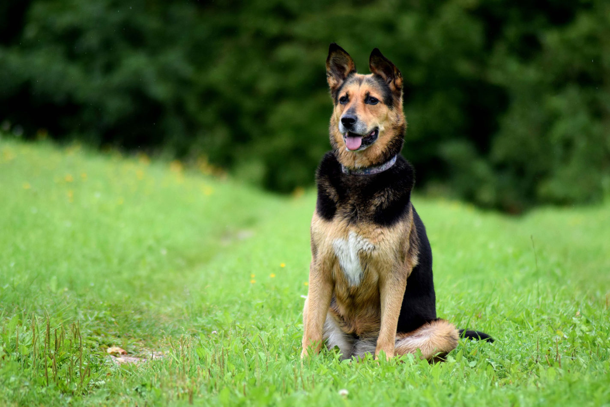

Why Dogs Bury Bones and Other Objects

Instinct
This behavior may have developed due to strong survival instincts inherited from the domesticated dogs' wild ancestors of wild dogs and the gray wolf. Food was not always the easiest to come by and to make the most of the food they had, these wild dogs would often bury the excess in the ground near their dens. The soil acts as a natural refrigerator by keeping the meal away from direct sunlight and the temperature of the earth decreases with the depth of the hole, keeping food fresher longer, so the animal can retrieve it later when nourishment is scarce.
Simple Steps to Train a Puppy to Lie Down

Lure Training
01
Show your puppy his training reward of choice. It can be a favorite toy or consist of tiny smidgeons of a strong smelling treat. Remember that he should ONLY get these favorite rewards during training, so he’s more eager to interact.
02
Place your puppy in a “sit” position. Once he’s in a comfortable seated position and paying attention to you, give the command, “down.”
How to Train Your Dog to Stay
